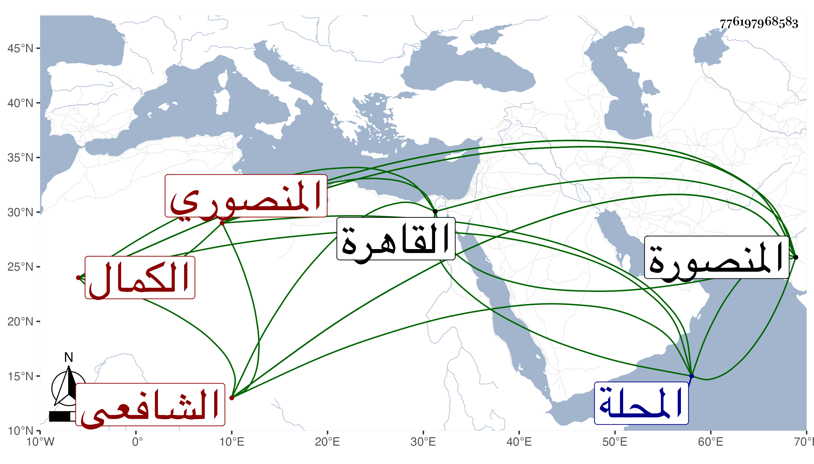

0902Sakhawi.DawLamic.ITO20230111-ara1.EIS1600.776197968583
Biography ID: 776197968583
220
محمد بن محمد بن خلف ابن كميل بن عوض بن رشيد بالتكبير بن علي الجلال أبو البقاء المنصوري الكمال الشافعي والد الصلاح محمد الآتي ويعرف بابن كميل بالتصغير . ولد قبل الثمانمائة بيسير بالمنصورة ونشأ بها فقرأ القرآن عند النور الطيبي وحفظ المنهاج والألفية وعرضهما على الولي العراقي والبيجوري والبرماوي وأجازوه وأخذ عن الأولين وكذا عن الشرفين عيسى الأقفهسي والسبكي في الفقه ولازم الشمس البوصيري كثيرا فيه وفي العربية وغيرهما بل وقرأ في العربية أيضا على الشمس بن الجندي واختص به ولازمه . وقطن القاهرة في أوقات متفرقة وولى قضاء بلده وكذا دمياط دهرا بل ولي قضاء المحلة أياما ، وحدث باليسير حملت عنه بالمنصورة أشياء . وكان تام العقل متواضعا ذا دهاء وخبرة واستمالة لرؤساء وقته بالهدايا وغيرها بحيث تقال عثراته وتستر زلاته وينقطع أحخصامه عن مقاومته حتى أن قريبه البدر بن كميل كان يكثر السعي عليه ويتوسل عند الجمال ناظر الخاص بقصائد يمتدحه بها ويهتز لها طربا ومع ذلك فلا يتحول عن هذا . مات بعد فشو ما كان به من الجذام في سنة ثمان وستين عفا الله عنه .
